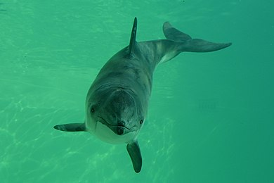

 |
|---|
Cūkdelfīns ir plaši izplatīta vaļveidīgo zīdītāju suga ziemeļu puslodē: Atlantijas un Klusajā okeānā, Melno un Azovas jūru ieskaitot.[4] Izplatības areāls aptver vēsos un mērenās joslas ūdeņus, vistālāk uz dienvidiem sasniedzot Āfrikas krastus. Atlantijas okeānā cūkdelfīns sastopams gar Rietumāfrikas, Spānijas, Portugāles, Francijas, Lielbritānijas, Īrijas, Skandināvijas, Islandes, Grenlandes, Jaunskotijas, Ņūfaundlendas un ASV austrumu krastiem.[4][5] Klusajā okeānā cūkdelfīns mājo gar Japānas, Vladivostokas, Aļaskas, Britu Kolumbijas un Kalifornijas krastiem, kā arī Beringa šaurumā.[4][5] Kopējā cūkdelfīnu populācijā ir apmēram 700 000 īpatņi.[4] Lielākā populācija, kurā ir apmēram 350 000 īpatņi, mājo Ziemeļjūrā.[6] Nākamās lielākās populācijas sastopamas Menas–Fandi līčos Atlantijas okeānā un gar ASV un Kanādas rietumu piekrastēm Klusajā okeānā.[7] Baltijas jūrā Cūkdelfīns ir vienīgā delfīnu suga, kas ir pastāvīga Baltijas jūras iemītniece. Pārējās novērotās delfīnu un vaļu sugas ir neregulāras ieceļotājas. Baltijas jūras populācijas lielākajai daļai ir raksturīga sezonāla migrācija, kas saistīta ar zivju pārvietošanos un jūras daļēju aizsalšanu.[1][8] Pavasarī cūkdelfīni iepeld Baltijas jūrā no Ziemeļjūras, bet vēlā rudenī atgriežas Ziemeļjūrā.[1] Tomēr daļa populācijas (apmēram 600 īpatņu[8]) Baltijas jūrā uzturas visu gadu. Pastāv viedoklis (kuram tiek meklēts pierādījums ģenētiskos pētījumos), ka Baltijas jūrā visu gadu dzīvojošā populācija ir atsevišķa pasuga. Mūsdienās tā tiek klasificēta kā Ziemeļatlantijas pasuga jeb nominālpasuga — P. p. phocoena.[1] Pie Latvijas krastiem cūkdelfīns ir novērots ļoti reti; pirms diviem novērojumiem 2019. gada sākumā (Liepājas ostā un Rīgas Jūras līcī) Latvijas piekrastē atrasts vien 2004. gadā sapinies un miris zvejnieku tīklos. Tā kā dzīvnieks ir uzmanīgs un kautrīgs, tas ir grūti novērojams. Pētniecības nolūkos Baltijas jūras teritorijā ir izvietoti 300 zemūdens mikrofoni (Latvijas piekrastē 34), kas reģistrē cūkdelfīnu izdotās skaņas. Iespējams, šī metode ļaus precizēt populācijas lielumu.[8]
Cūkdelfīns ir neliels zobvalis. Ķermeņa garums ir 1,3–2 m, bet parasti tas ir 1,5–1,6 m garš, svars 35–90 kg.[1] Mātītes ir lielākas nekā tēviņi, un masa visbiežāk nepārsniedz 60 kg.[1][8][9] Ķermenis ir kompakts, torpēdveidīgs, piemērots ātrai peldēšanai. Galva relatīvi neliela, īsa, ar strupu, noapaļotu purnu un mazām acīm. Muguras spura ir zema un trīsstūrveidīga, novietota nedaudz uz leju no muguras viduspunkta, astes spura plata un divdaļīga, novietota horizontāli, krūšu spuras īsas un noapaļotas. Galvas augšpusē atrodas viena plaisveidīga nāsu atvere, kas ienirstot noslēdzas ar īpašu vārstuli. Mugura un spuras ir tumši pelēkas vai tumši pelēkbrūnas, vēders gaiši pelēks vai balts. Pāreja no tumšās augšpuses uz gaišo apakšpusi pakāpeniska. Mutes kaktiņu un krūšu spuru parasti savieno šaura, pelēka josla. Samērā bieži sastopami balti vai ļoti gaiši pelēki īpatņi, galvenokārt Atlantijas okeāna ziemeļu daļā.[10] Augšžokļa katrā pusē aug apmēram 22–28 konusveidīgi zobi, apakšžoklī 22–26 zobi.[9] Tie visi ir vienādi, jo paredzēti tikai barības satveršanai un noturēšanai. Pieres daļā atrodas eholokācijas orgāns. Viens pāris zīdekļu. Āda neapmatota, mīksta, gluda, elastīga, bez dziedzeriem. Tāpat kā visiem vaļveidīgajiem arī cūkdelfīnam ir labi attīstīts, biezs zemādas tauku slānis, kas nodrošina vienmērīgu ķermeņa temperatūru vēsos ūdeņos.[1][8]